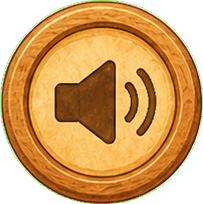
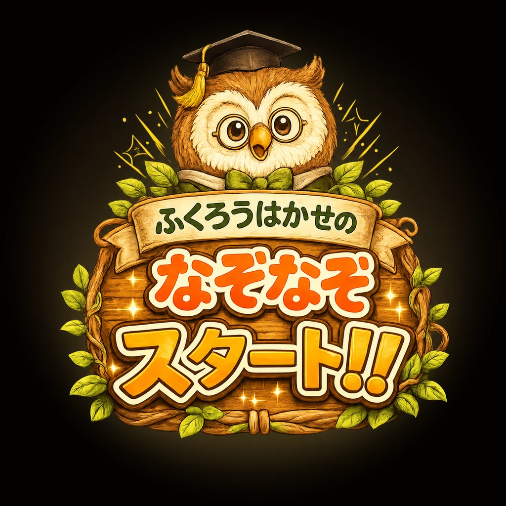

▶ タップしてスタート
📱
よこむきに
してね
どっちで あそぶ？
😊 やさしい
いろ・かず・かたち
💡 ものしり
てんき・からだ・なんでも
むずかしさ
★
かんたん
★★
ふつう
★★★
むずかしい
フクロウはかせの
なぞなぞ
1
/
5
🔔
おしらせ
⚙️
せってい
よういちゅう…

ヒント！
やったー！
🎉
クリア！
もう一回 ▶
🦉 モードをかえる
← メニューにもどる
タップしてつづける
▶
スキップ ▶︎
